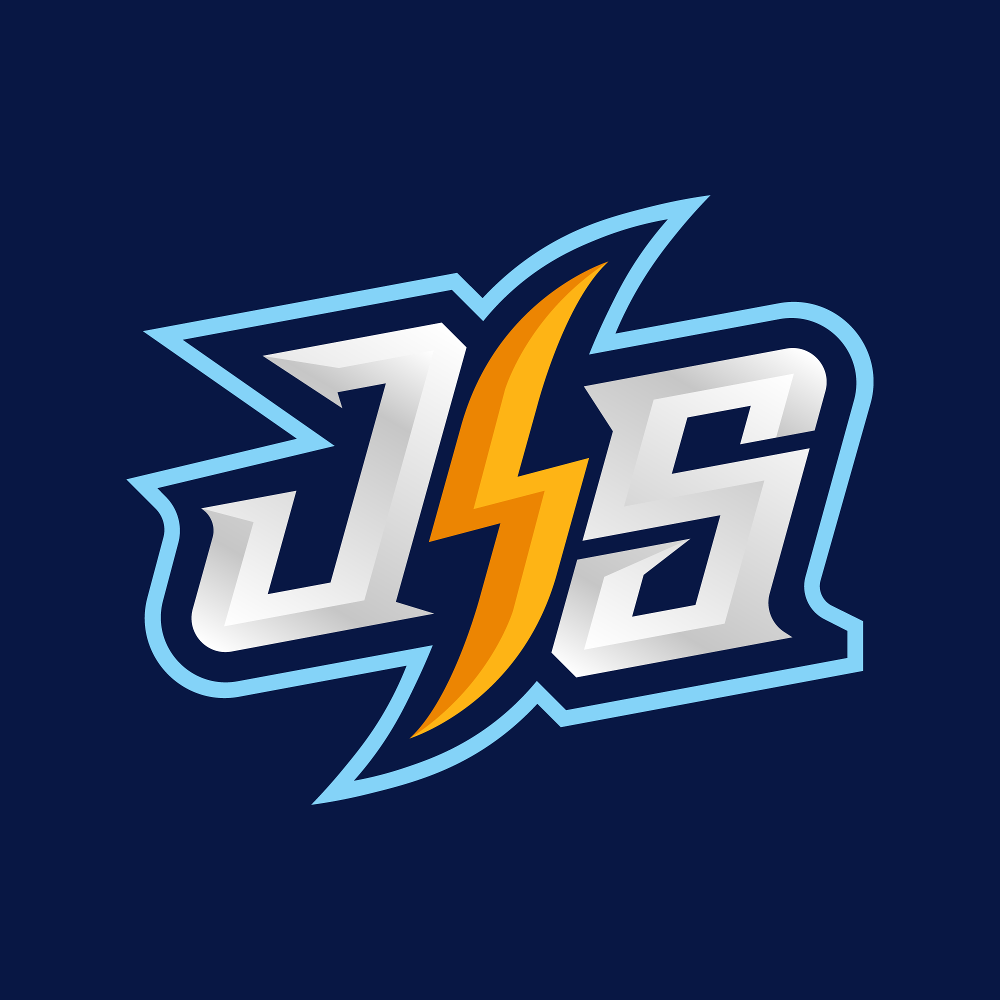
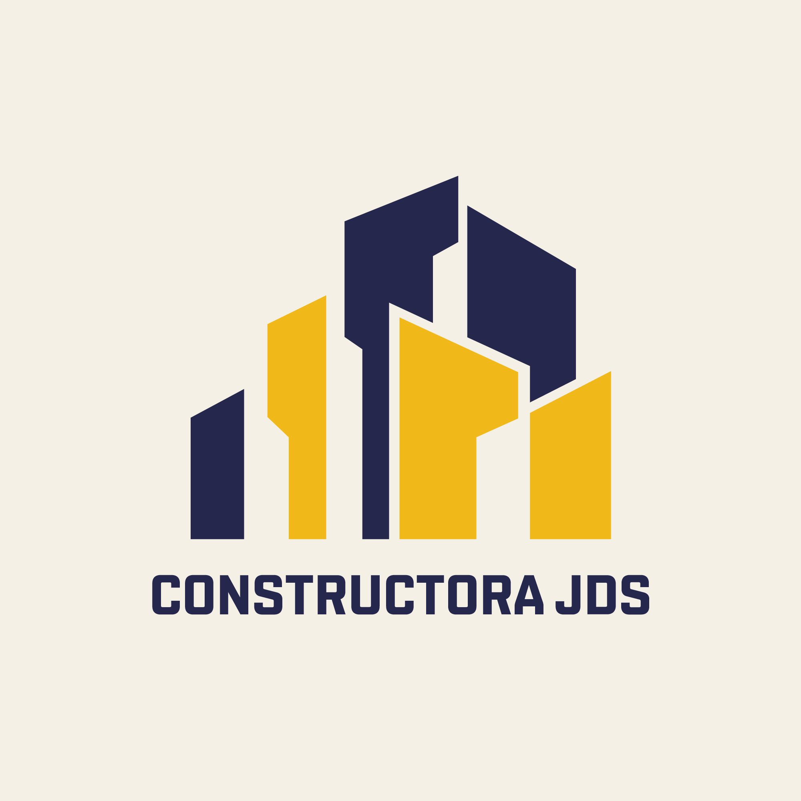
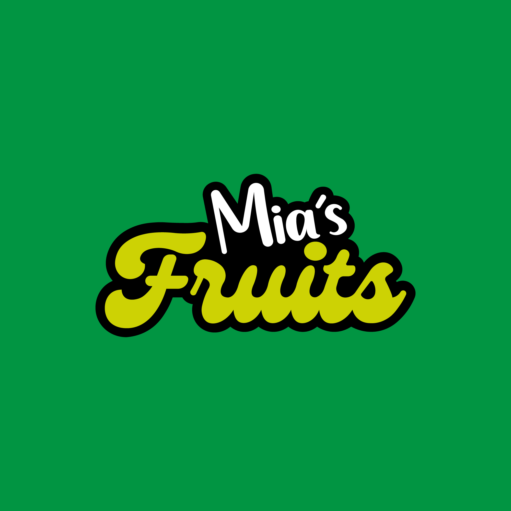
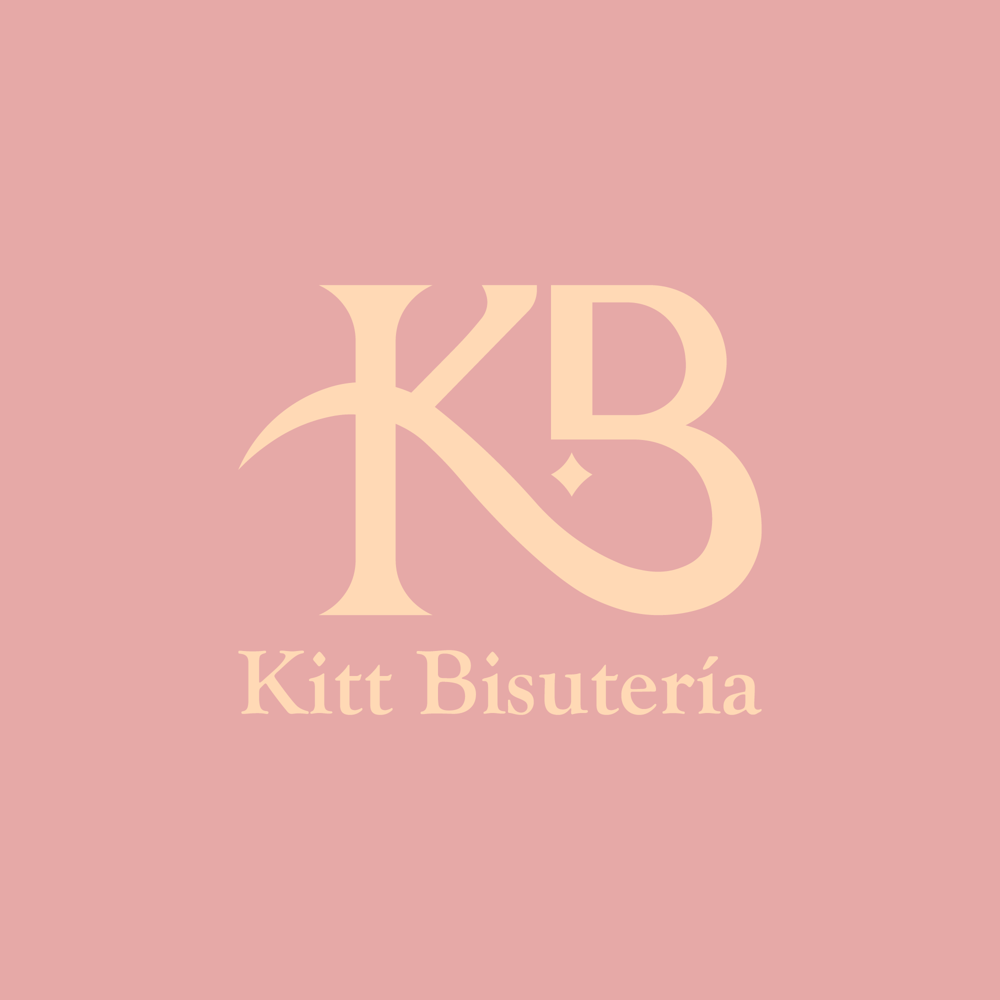
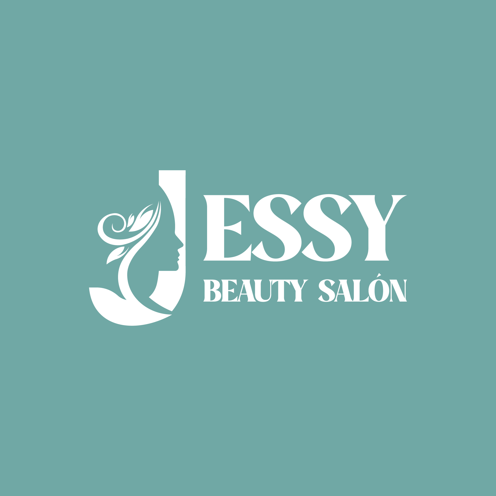
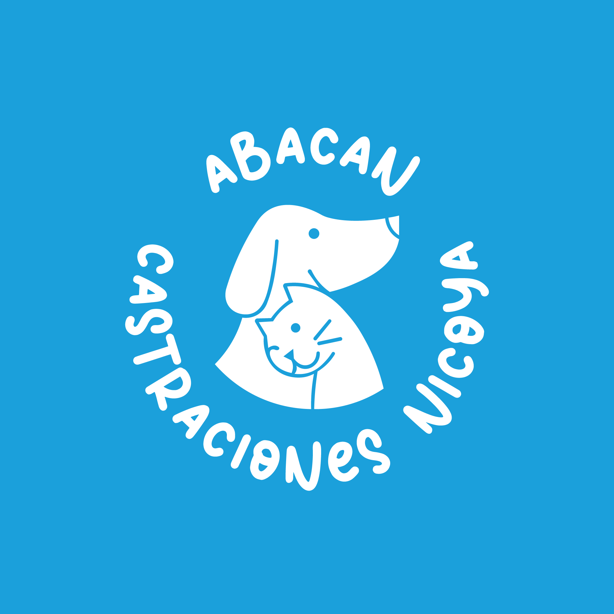

Storm Tech
Este logo incorpora una letra 'S' con un estilo tecnológico
Feria Corazón
Este logo representa las letras 'F' y 'C' entrelazadas de manera creativa para formar un corazón

Jose Storm
Este logo incorpora las iniciales del logo 'JS' con un rayo en el medio

Constructora JDS
Este logo representa una empresa constructora con edificios integrada

Mia´s Fruits
Este logo representa una heladería, incluyendo su nombre correspondiente

Kitt Bisutería
Este logo incorpora las letras 'K' y 'B', junto con una estrella que simboliza su esencia

Jess Beauty Salón
Este logo es de salón de belleza incluye la letra 'J' integrada de manera creativa como una figura femenina

Castraciones Nicoya
Este logo representa una empresa dedicada a la castración de animales, enfocada en perros y gatos para controlar la sobrepoblación